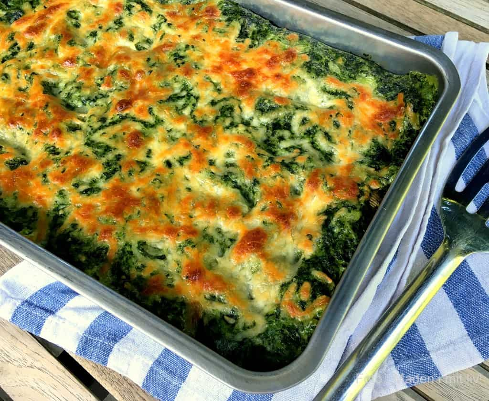

Spinach Lasagna

Description
Spinach lasagna, for when you want some gains but without meat! Plenty of cheese and spinach in this delicious, yet simple recipe
Ingredients
- 1000g Frozen Spinach, thawed and pressed for excess liquid
- 1 tbsp Oil
- 2 Onions
- 4 cloves of Garlic
- 800ml Milk
- 3 tbsp Flour
- 100ml Water
- 1 tsp Nutmeg
- 16 Lasagna Sheets
- 150g Shredded Cheese
- Salt and Peber to taste
Procedure
- Sauté onions and garlic in oil
- Add spinach, let it cook for a couple of minutes
- Bring milk to boil at low heat
- Blend flour and water together, pour the mixture into the milk while whisking
- Bring it back to boiling heat for a few minutes, thickening it and removing the flour taste
- Turn the spinachblend in the white sauce, and taste it with nutmeg, salt & peber
- Start the lasagnalayer with sauce, then add sheets and repeat 3-4 times
- The last layer should be sauce, which is to be topped with shredded cheese
- Bake the lasagna at 190°C (hot air oven) for 25-30 minutes, till the cheese is golden
- Let the lasagna rest for 5 minutes. The lasagna is freezable, and reheatable